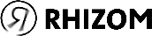

Der seit 1988 bestehende Grazer Kulturverein  bietet mit seiner transdisziplinären und kollektiven Arbeitsweise ein ideales Fallbeispiel für netzwerkartige Organisationsformen in der freien Kulturszene.
Durch die Modellierung von Vereinsstruktur, Netzwerken und Inhalten soll nachvollziehbar werden, wie Kooperationen entstehen, ob und wie sich Rollen über die Zeit verschieben und welche Personen oder Projekte als Knotenpunkte kultureller Aktivität fungieren.
Das Projekt verbindet qualitative kulturwissenschaftliche Fragestellungen mit quantitativen Methoden der Netzwerkanalyse und leistet damit einen Beitrag zur digitalen Erschließung freier Kunst- und Kulturarbeit in Österreich.
Forschungsblog (theoretisch)
Theoretischer Überblick & methodische Ansätze
Forschungsblog (angewandt)
Dokumentation der Forschungsprozesse & Ergebnisse
Netzwerkvisualisierung
Interaktive Karte der Akteur:innen und Relationen im Netzwerk
Prompt Engineering
Tagebuch der Prompting-Arbeitsprozesse & Reflexion
Glossar
Projektrelevante Begriffe aus DH & Kulturwissenschaften